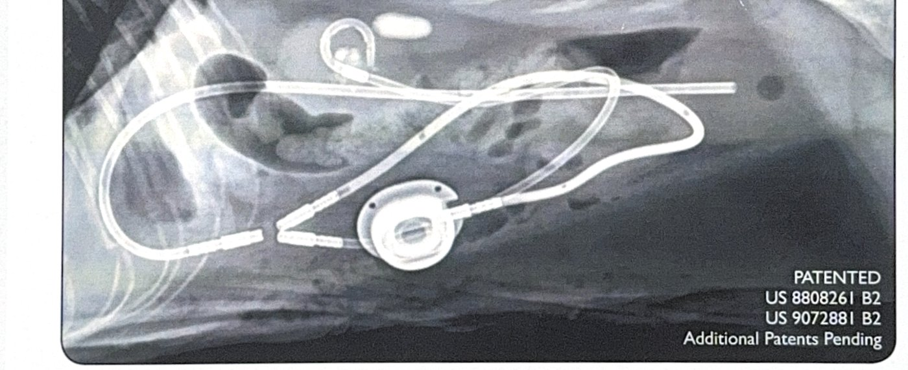
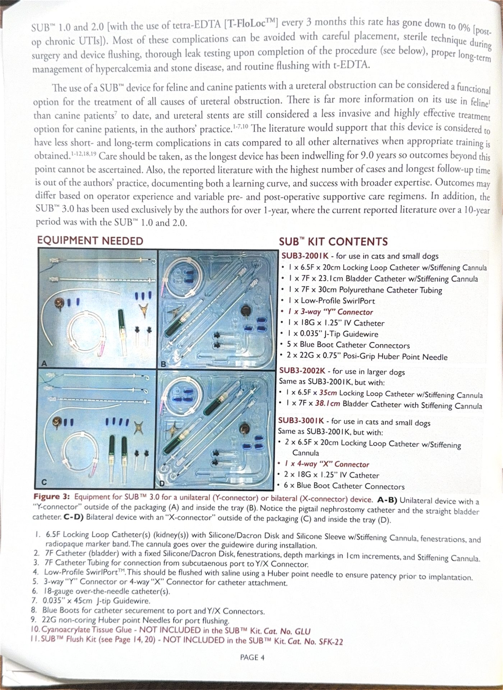
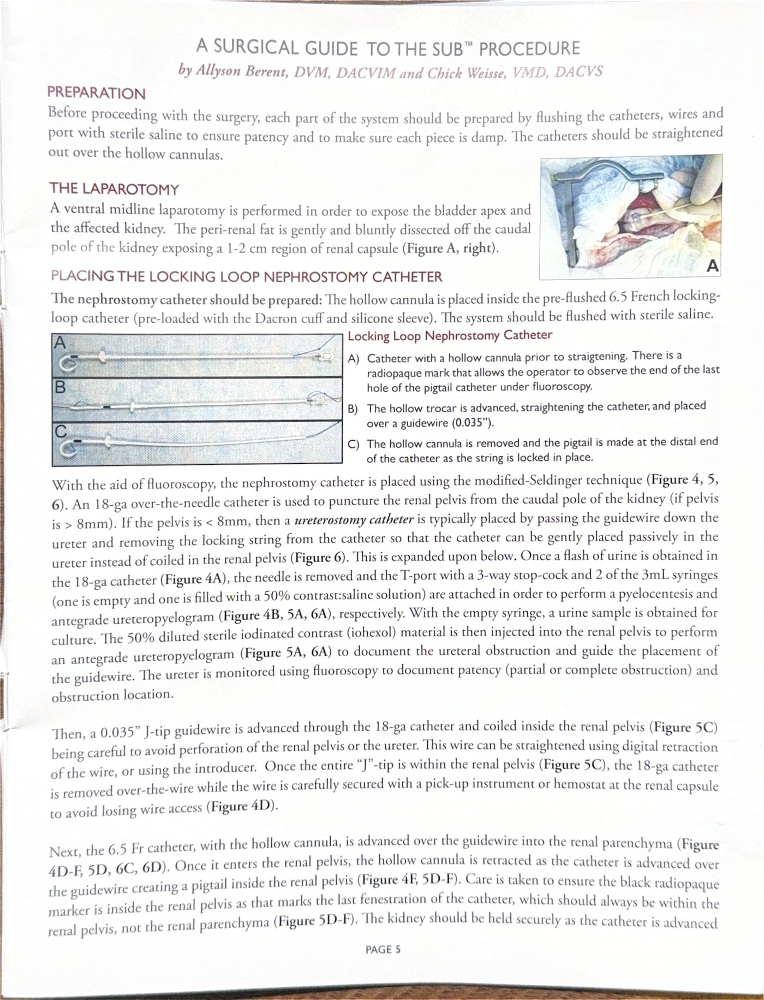
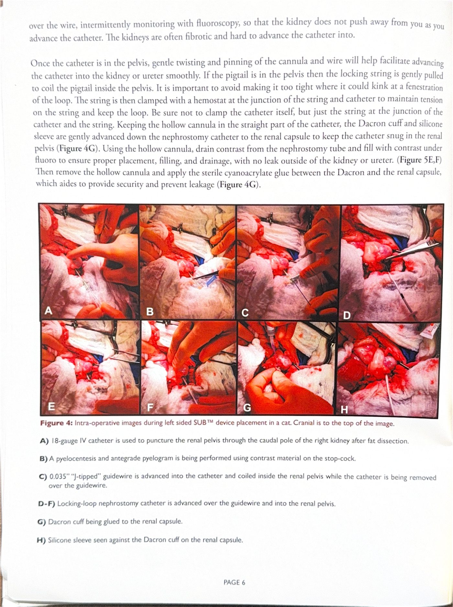
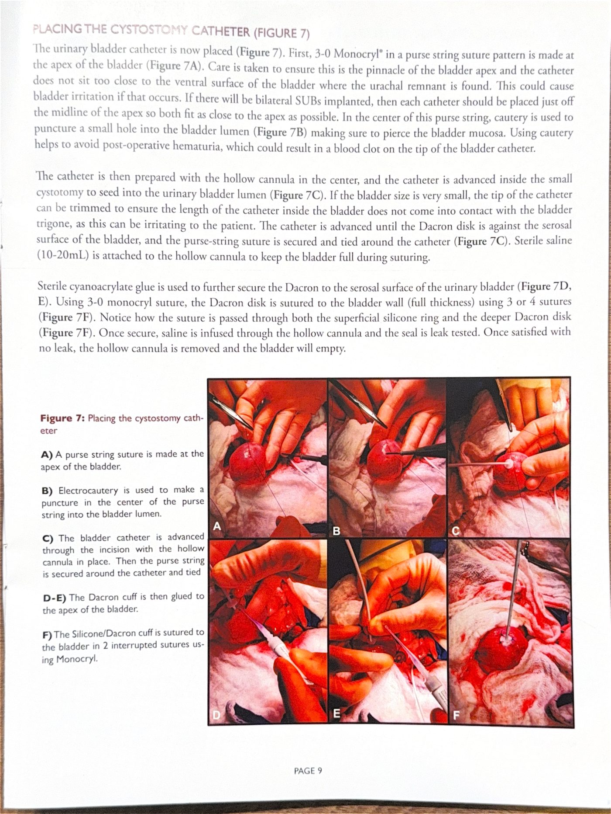
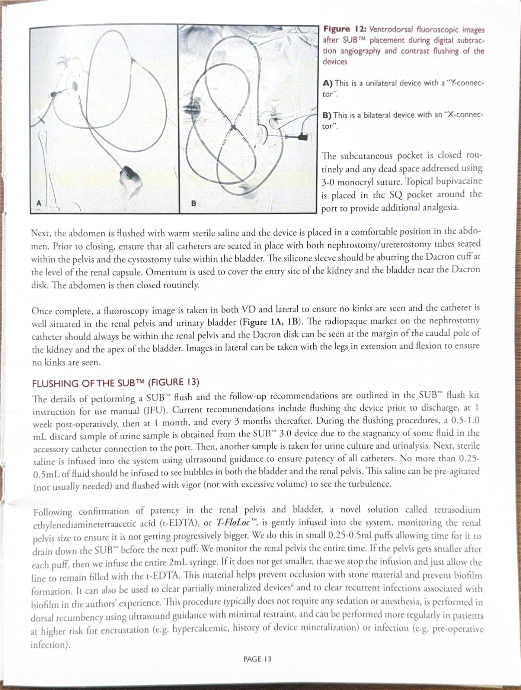

重點摘要
- SUB 是留置式人工輸尿管，不是暫時性支架：用 3 條導管＋1 個皮下注射座在腎臟與膀胱間建立永久繞道取代自然輸尿管功能，需要終生的定期沖洗維護，不是一次性手術就結束。
- 腎盂大小決定置放技術，術前／術中要重新確認：腎盂 ≥8mm 用鎖環 pigtail 導管；<8mm 改用不鎖環導管沿輸尿管走向放置；<5mm 需先用細導絲再交換，不是所有病例都用同一套流程。
- 3.0 版扭結率降到 0% 的關鍵是設計、不是管徑：腎導管與膀胱導管完全留置腹腔內、只有第三條連接管穿腹壁接注射座——理解這個設計差異，才知道為什麼要選 3.0 版而非沿用舊款。
- 術後沖洗是預防長期併發症的關鍵，不是例行公事：常規 t-EDTA 沖洗讓慢性 UTI 由 8% 降到 0%、礦化率也下降；沖洗時若腎盂持續擴張必須立即停止，避免腎損傷。
- 血塊阻塞有明確處置順序，不是直接手術：先經注射座灌注 TPA 溶解血塊，無效才需要再次手術更換導管。
SUB 系統總覽
資料整理自 Norfolk Vet Products 原廠手術指南《SUB™ 3.0 A Surgical Guide》（Drs. Allyson Berent, DACVIM 與 Chick Weisse, DACVS 提供）。SUB (Subcutaneous Ureteral Bypass System) 是治療貓（少數犬）輸尿管阻塞的介入性裝置，2009 年開發至今已用於數千例貓病患，此頁整理裝置原理、適應症、手術步驟與術後照護重點，供住院醫師參考，實際置放需經原廠訓練或有經驗術者指導。
置放前務必完成適當訓練。原廠建議新手術者先於大體或 3D 列印矽膠模型上練習，並建議置放前先觀看原廠教學影片或與作者聯繫（可透過 allyson.berent@gmail.com 或 chick.weisse@gmail.com）。技術操作不熟練是併發症的主要原因。
裝置是什麼
SUB 是一套留置式皮下輸尿管繞道系統，利用 3 條導管＋1 個皮下注射座（SwirlPort），在腎臟與膀胱之間建立一條「人工輸尿管」，繞過阻塞的自然輸尿管：
Nephrostomy / Locking-loop catheter
6.5F 導管，末端可鎖成 pigtail 固定於腎盂內；腎盂 <8mm 時改為不鎖環的「輸尿管造廔導管」，沿輸尿管走向放置。
Cystostomy catheter
7F 直型導管，固定於膀胱頂端（apex），Dacron 盤縫合固定於漿膜面。
SwirlPort
縫合固定於腹壁皮下，經 Huber 針穿刺可沖洗系統、採尿檢體，不需手術即可長期維護通暢。
單側阻塞用 3-way「Y-connector」；雙側阻塞可用 4-way「X-connector」單一注射座，或兩組獨立 Y-connector＋兩個注射座。

版本演進：為什麼是 3.0
舊版（1.0／2.0）注射座直接固定在腹壁上，腎導管與膀胱導管必須各自穿出腹壁去接注射座；SUB 3.0 把兩條導管都留在腹腔內、改成單一連接管穿腹壁。少一條管路穿腹壁，就少一個容易扭結的地方：
物種與臨床定位
貓 文獻與經驗最豐富，長期留置紀錄最長達 9 年； 犬 病例數較少，作者的臨床實務上犬仍優先考慮輸尿管支架（ureteral stent），SUB 為替代選項。
逾 85% 貓輸尿管阻塞合併腎結石，每側輸尿管中位數石頭數 4 顆，多發性、多節段阻塞或腫瘤造成的阻塞都是 SUB 的良好適應症，因為 SUB 不需要精準定位單一阻塞點即可繞道。
適應症與器材準備
確認適應症、選對套組型號、術前把所有元件都用生理食鹽水預浸排空氣，是手術能否順利的第一步。
適應症
- 貓、犬功能性輸尿管阻塞：結石、狹窄（stricture）、腫瘤，不論阻塞位置、大小或數量
- 單側或雙側皆可（雙側需 X-connector 或兩組 Y-connector＋雙注射座）
- 腎盂週腎盂積水明顯擴張、傳統輸尿管切開術／支架失敗或風險過高的病例
人醫已將類似繞道裝置用於泌尿道惡性腫瘤、腎移植後輸尿管狹窄、支架效果不佳或傳統手術禁忌的病患，原理相通。
SUB 3.0 套組型號選擇
| 型號 | 適用 | 與標準組差異 |
|---|---|---|
| SUB3-2001K | 貓與小型犬 | 6.5F×20cm 腎導管、7F×23.1cm 膀胱導管、3-way Y-connector |
| SUB3-2002K | 大型犬 | 同上但導管加長（6.5F×35cm／7F×38.1cm） |
| SUB3-3001K | 雙側阻塞／阻塞性腫瘤 | 2 條腎導管＋4-way X-connector（單一注射座接雙側） |
套組內容物（以 SUB3-2001K 為例）
- 6.5F×20cm 腎造廔（locking-loop）導管＋硬化套管
- 7F×23.1cm 膀胱導管＋硬化套管
- 7F×30cm 聚氨酯連接管
- 低矮型 SwirlPort
- 3-way「Y」接頭（雙側組為 4-way「X」接頭）
- 18G×1.25" 靜脈留置針
- 0.035" J 型導絲
- 5×藍色 boot 導管接頭套
- 2×22G×0.75" Huber 針（無芯針）
套組不含：無菌氰基丙烯酸酯組織膠（Cat. No. GLU，用於固定 Dacron 盤）、SUB Flush Kit（術後沖洗用，Cat. No. SFK-22 / SFK-20）。腎盂 <8mm 需改走輸尿管時，還需0.035"／0.018" 親水血管導絲（angle-tipped hydrophilic guidewire，套組亦不含）。

術前準備
手術步驟
整體流程：剖腹 → 放置腎造廔導管 → 放置膀胱造廔導管 → 腹腔內連接 Y/X 接頭並測漏 → 連接管穿腹壁接注射座 → 全系統測漏（DSA）→ 關腹。以下步驟以貓為例，犬原理相同。
1. 剖腹與腎臟顯露
2. 放置腎造廔導管（改良式 Seldinger 技術）
前提：腎盂 >8mm。腎盂 <8mm 的處理方式見下方警示框。

腎盂 <8mm（改走輸尿管，不鎖環）：剪去鎖繩，導管不鎖環而是沿輸尿管弧度自然放置（此時變成「輸尿管造廔導管 ureterostomy catheter」）。穿刺點改為更外側／尾外側（左側 5 點鐘、右側 7 點鐘方向，而非正尾極 6 點鐘），需用 0.035"（腎盂<8mm 用 0.018"）親水血管導絲（套組不含）沿輸尿管方向置入後再交換導管，全程須在透視下小心操作以避免輸尿管或腎盞穿孔。

3. 放置膀胱造廔導管

4. 腹腔內連接 Y/X 接頭
鎖繩不可外露於接頭連接處之外——這會造成密封不完整、成為滲漏點。
5. 放置皮下注射座並最終測漏
皮下注射座周圍可局部注射 bupivacaine 提供額外術後止痛。
術後沖洗與長期照護
SUB 裝置需要終生定期沖洗以維持通暢、預防礦化與感染，是門診追蹤與衛教的重點。
沖洗時程
高風險病例（高血鈣、曾有裝置礦化或感染病史）可視情況增加沖洗頻率。
SUB Flush Kit 內容物
- T-port 接頭 ×1、3-way 三通 ×1、20 或 22G Huber 針 ×1
- 空針 3mL ×2（1 支棄置樣本用、1 支採尿樣本用）
- 3mL 空針含 2.5mL 無菌生理食鹽水 ×1
- T-FloLoc™（2mL 四鈉乙二胺四乙酸 t-EDTA）裝於 12mL 空針 ×1

超音波導引沖洗步驟（通常不需鎮靜）
沖洗全程務必以超音波（或透視）監測腎盂，絕對不可過度擴張腎盂。若腎盂出現擴張，先暫停注入；數秒內未緩解則立即停止沖洗。
t-EDTA（T-FloLoc）的效益
常規使用 t-EDTA 沖洗可預防結石／生物膜堆積造成的阻塞，並清除既有的輕度礦化或感染生物膜。原廠長期追蹤資料顯示：
24.5% → 使用 t-EDTA 後降至 12.7%（其中僅 4.5% 需更換裝置）
8% → 使用 t-EDTA 後降至 0%，是目前最顯著的改善項目
以上是原廠指南（開發者世代）的數字。已發表研究的沖洗時程差異、術後照護項目與獨立研究數據（例如慢性 UTI 在 saline 組 33%、只用 t-EDTA 組 3%），見第 7 節 文獻補充。
併發症與預後
整理自原廠彙整 2009–2020 年 SUB 1.0/2.0/3.0 的大型病例回顧（174 顆 SUB，134 隻貓，2009–2015；後續加上 t-EDTA 常規沖洗世代的追蹤資料）。
>93%
>98%
<25%
中位追蹤 827 天（範圍 1–2397 天）。Creatinine 中位數由術前 6.8 mg/dL 降至出院前 2.6 mg/dL、首次回診時 2.1 mg/dL。
併發症比較（SUB 2.0 vs. 3.0，常規 t-EDTA 沖洗世代）
| 併發症 | 2.0 + t-EDTA （69 SUB, 55 貓） | 3.0 + t-EDTA （42 SUB, 38 貓） | 2.0＋3.0 合計 （111 SUB, 73 貓） |
|---|---|---|---|
| 滲漏 | 1.5% | 0% | 1% |
| 扭結（kinking） | 15% | 0% | 11% |
| 裝置內血塊 | 11.6% | 4.7% | 9% |
| 裝置礦化 | 16% | 7% | 12.7% |
| 因礦化需更換裝置 | 7% | 0% | 4.5% |
| 排尿困難（dysuria） | 9% | 5% | 6.8% |
| 慢性泌尿道感染 | 0% | 0% | 0% |
| 出院前死亡 | 5.5% | 5.2% | 5.5% |
| 中位追蹤天數 | 276 天 | 204 天 | 244 天 |
資料來源：Table 1, Norfolk Vet Products《SUB™ 3.0 A Surgical Guide》p.17（原始數據整合自 Berent et al. JAVMA 2018;253:1309-1327 及後續原廠追蹤）。
重點併發症說明
幾乎都與鎖繩未剪齊、外露於接頭之外有關，SUB 2.0／3.0 因設計改良（Dacron 環固定）已大幅降低發生率。
舊版最高達 15%，SUB 3.0 因三管完全留置腹腔內，扭結率降至 0%。舊版扭結多為技術性錯誤——連接管穿腹壁處與藍色接頭末端距離不夠，尤其在病患姿勢改變（蹲伏 vs. 伸展）時更明顯。
術後中位 3.5 天內發生，約 8% 病例；半數可經注射座灌注 1mL 組織胞漿素原活化劑（TPA）解決，另一半需要再次手術更換導管（延長住院約 1 天）。
長期追蹤中位 463 天時發生率 24.5%（未用 t-EDTA 世代），其中一半僅表現為通暢輸尿管而不需更換、另一半需更換裝置（中位住院 2 天，存活率 100%）。常規 t-EDTA 沖洗後降至 12.7%。
整體而言，SUB 被視為目前貓輸尿管阻塞治療選項中短期與長期併發症相對最少的介入方式之一，前提是術者受過適當訓練、並落實螢光透視導引置放與規律沖洗追蹤。
文獻補充：沖洗時程與術後照護
前面幾節整理自原廠指南，這一節補上已發表研究與醫院衛教資料的對照。原廠指南作者即裝置開發者，獨立研究的數字普遍比原廠世代差，臨床溝通時建議兩者並陳。
沖洗時程：各來源比較
| 來源 | 建議時程 |
|---|---|
| 原廠指南 p.13（Norfolk Vet） | 出院前、術後 1 週、1 個月，之後每 3 個月；高血鈣、曾礦化或曾感染者可更頻繁 |
| Berent 2025 JVIM（66 隻貓、95 顆 SUB，回溯） | 出院時、4 週、每 3 個月至 2 年，之後每 6 個月 |
| JVIM 2021（81 隻貓） | 出院前沖洗；回診在 1、3、6、9、12 個月，之後每 3 個月（每次回診含超音波導引沖洗） |
| WSAVA 2018／MSPCA-Angell | 手術結束、術後 1 個月內，之後每 3–6 個月，終生 |
| Today's Veterinary Nurse | 出院、1 週、1 個月，之後每 3 個月（與原廠相同） |
| 2026 SUB 取出研究（21 隻貓） | 描述院內標準做法為每 3 個月沖洗 |
各來源一致的是「出院前 → 約 1 個月 → 每 3 個月」。「術後 1 週」這一次只出現在原廠版本；2 年後可放寬到每 6 個月只有 Berent 2025 提出；Habib 2025（18 隻貓）的研究並未建議任何沖洗間隔。
為什麼是這樣的時程
各來源多半只給時間點，沒有解釋原因。下表把「來源有寫的目的」和「我們依數據做的推測」分開列，推測的部分請當作理解用的思路，不是原廠說法。
| 時間點 | 來源有寫的 | 推測（來源未說明） |
|---|---|---|
| 出院前 | 81 隻貓研究中所有貓都在出院前做超音波導引沖洗；原廠指南 p.14 要求沖洗前先量並記錄腎盂大小 | 確認裝置通暢，並留下腎盂大小的基準值，之後才有東西可以比較 |
| 術後 1 週 （僅原廠版本） |
原廠 p.13 列為建議時程，但未說明理由，細節寫在 flush kit 說明書（我們沒有）；Berent 2025 是 4 週、81 隻貓研究是 1 個月，都沒有 1 週 | 原廠 p.16 寫術後早期阻塞的中位數是 3.5 天，幾乎都是導管內血塊（約 8%）。1 週可能是在確認早期血塊風險期過後仍然通暢，同時第一次採尿培養 |
| 約 1 個月（4 週） | 多數來源都有這一次；Berent 2025 在此開始抽尿液分析與培養 | 81 隻貓研究中扭結的中位時間是 58 天（範圍 2–601 天），1 個月回診可以抓到早期的機械性問題。注意這是混合各代裝置的數字，3.0 版原廠回報扭結為 0% |
| 之後每 3 個月 | 沖洗同時採尿做分析與培養（原廠 p.13）；t-EDTA 用於預防結石堆積與生物膜（原廠 p.13） | 後期併發症出現得慢：礦化中位 463 天（原廠 p.16）、管腔阻塞中位 204 天、感染中位 150 天（81 隻貓）。無症狀時就要靠定期沖洗與尿培養抓到；81 隻貓研究另有 8% 是無症狀菌尿 |
| 2 年後每 6 個月 （僅 Berent 2025） |
該篇只給時程，未說明理由 | 可能是穩定後風險下降、降低回診負擔，但作者沒有這樣寫。其他來源仍建議每 3 個月或每 3–6 個月 |
| 高風險者更頻繁 | 原廠 p.13：高血鈣、曾有裝置礦化者「結石堆積風險較高」，曾感染者（例如術前感染）「感染風險較高」，可更常沖洗 | —（原廠已有說明） |
本次查到的資料中，沒有比較不同沖洗間隔的研究，Berent 2025 也沒有「完全不沖洗」的對照組。這些時程是專家經驗與各院慣例，不是由試驗驗證出來的最佳間隔。要調整時程時，應以個別病患的風險（高血鈣、曾礦化、曾感染）與上面的併發症發生時間為依據。
術後照護項目
| 項目 | 內容 | 出處 |
|---|---|---|
| 住院監測 | 肌酸酐、電解質、TS、PCV 每 12–24 小時追蹤至出院；每日泌尿超音波評估腎盂與輸尿管擴張 | JVIM 2021（81 隻）；Berent 2025 為至少每 24 小時 |
| 住院天數 | 約 3–5 天 | Anderson Moores 衛教單張（非研究） |
| 回診抽血 | 肌酸酐、電解質、BUN 於 1、3、6、9、12 個月 | Berent 2025 |
| 尿液與影像 | 尿液分析＋培養於 4 週、每 3 個月至 2 年、之後每 6 個月；腹部超音波（腎盂／輸尿管直徑、導管通暢、礦化）同間隔 | Berent 2025 |
| 每次回診 | 理學檢查、血壓、renal profile、PCV／TS、尿培養、超音波導引沖洗 | JVIM 2021（81 隻） |
| 抗生素 | marbofloxacin 約 2.75 mg/kg q24h × 2 週；已知有 UTI 則約 6 週。術前尿培養陽性者，術前／術中／術後給藥並依藥敏持續 4–6 週 | Berent 2025；Today's Veterinary Nurse |
| 沖洗時的止痛 | 多數不需鎮靜；必要時 gabapentin 於沖洗前一晚與前 1–2 小時給予 | Today's Veterinary Nurse |
SUB 貓不可盲式膀胱穿刺；注射座不可用切割針頭穿刺，也不應由未受過 SUB 訓練者操作（應使用 Huber 針避免破壞矽膠隔膜）。
原廠數據 vs 獨立研究
| 研究 | 族群 | 主要數字 | 備註 |
|---|---|---|---|
| 原廠指南（開發者世代） | 1.0／2.0／3.0，2009–2020 | 出院存活 >93%；慢性 UTI 8% → 0%；礦化 24.5% → 12.7% | 作者即裝置開發者 |
| Berent 2018 JAVMA | 134 隻貓、174 條輸尿管 | 出院存活 94%；肌酸酐 6.6 → 2.6 mg/dL（3 個月）；術後 10/28 隻（35.7%）尿培養陽性，中位 159 天 | 數字取自摘要，未讀全文 |
| JVIM 2021 | 81 隻貓 | 出院存活 94%；管腔阻塞 17%（中位 204 天）；扭結 10%（中位 58 天）；感染 26%（中位 150 天）；再手術 17%；1 年存活 70%；平均存活 821 天 | 存活的負向預測因子：出院時肌酸酐較高、輸血次數多、狹窄（HR 6.33） |
| Kulendra 2021 JSAP（英國） | 95 隻貓、130 顆 SUB | 10 隻未出院；出院後 42% 死亡或安樂死；中位存活 530 天；輕微併發症 19%、重大併發症 48%（多在出院後）；27 隻術後 UTI | 僅讀到摘要 |
| Vrijsen 2021 JFMS | 24 隻貓 | 併發症比先前報告多、存活較短 | 未讀到具體數字 |
| Habib 2025 JVIM | 18 隻貓、26 條輸尿管 | 通暢 19/23（82.6%）；trigone irrigation 敏感度 87.5%、特異度 100% | 每隻貓只影像一次、時間點不一，無法判斷何時恢復通暢 |
| 2026 SUB 取出研究 | 21 隻貓 | 取出原因（可複選）：尿培養陽性 15、阻塞 8、無菌性膀胱炎 4、疑似失效 2、腸道瘻管 3；取出時間中位 1.8 年；取出後中位存活 614 天 | 強化 t-EDTA 方案（需反覆住院與鎮靜）接受度低 |
t-EDTA 的證據
預防用（2%，2 mL）：Berent 2025 比較三組，標 * 者與其他組相比 p<0.05。
| 組別 | 礦化 | 完全阻塞 | 更換裝置 | 慢性 UTI | 追蹤中位數 |
|---|---|---|---|---|---|
| 只用生理食鹽水（21 隻、28 顆，2012–2017） | 32% | 29% | 14% | 33% | 772 天 |
| 生理食鹽水改 t-EDTA（12 隻、16 顆） | 50% | 38% | 31% | 33% | 934.5 天 |
| 只用 t-EDTA（33 隻、51 顆，2017–2021） | 19%* | 14% | 6%* | 3%* | 1015.5 天 |
回溯性研究；各組是不同年代，且沒有完全不沖洗的對照組；「改用 t-EDTA」組異質性大；作者群與原廠指南相同。作者認為 t-EDTA 已是其標準照護，且未見腎功能或排尿困難的不良影響。
治療用（4%，3 mL）：英國回溯研究（14 隻貓、16 顆阻塞的 SUB）：完全阻塞者每天 2 次連續 3 天，部分阻塞者改為每週、隔週、每 3 個月。
11/16（68.8%），中位 5 次輸注（範圍 3–12）
6/11（54.5%），中位 87 天（範圍 29–346）
8/14 隻出現自限性頻尿或血尿，以 gabapentin 或減量控制
預防用是 2%（原廠 T-FloLoc），治療阻塞的研究用的是 4%。治療礦化或生物膜的完整方案，原廠指南 p.15 註明需向 Norfolk Vet 索取，本頁未收錄。
標準 SOP 的現況
目前沒有找到獨立的共識指南（例如 ACVIM 等專科學會）。實務上的標準流程是原廠 flush kit 附的使用說明書（IFU），本頁整理自原廠手術指南，尚未取得 IFU 本體。上表的時程差異反映各院自行的調整，而非統一標準。
以下資料取得受限：Vrijsen 2021 與 Kulendra 2021 全文、陽性尿培養論文（PubMed）與 Chik 2019 原文皆未能讀到全文，對應數字僅來自摘要或搜尋摘要，或未收錄。此節整理於 2026 年 9 月，使用前請對照原文。
參考資料
- Berent AC, et al. (2025). Long-term outcomes after prophylactic infusion of 2% tetrasodium ethylenediaminetetraacetic acid in 95 subcutaneous ureteral bypass devices in 66 cats with benign ureteral obstructions. Journal of Veterinary Internal Medicine. https://doi.org/10.1111/jvim.70006
- Habib, et al. (2025). Assessing ureteral patency by fluoroscopy and ultrasonography after subcutaneous ureteral bypass device placement for the treatment of benign ureteral obstruction in cats. Journal of Veterinary Internal Medicine, 39(3). https://doi.org/10.1111/jvim.70078
- Subcutaneous ureteral bypass device placement in 81 cats with benign ureteral obstruction (2013–2018). (2021). Journal of Veterinary Internal Medicine, 35(6). academic.oup.com/jvim/article/35/6/2778
- Kulendra, et al. (2021). Survival and complications in cats treated with subcutaneous ureteral bypass. Journal of Small Animal Practice. https://doi.org/10.1111/jsap.13226
- Vrijsen E, Devriendt N, Mortier F, Stock E, Van Goethem B, de Rooster H. (2021). Complications and survival after subcutaneous ureteral bypass device placement in 24 cats: a retrospective study (2016–2019). Journal of Feline Medicine and Surgery, 23, 759–769. https://doi.org/10.1177/1098612X20975374
- Berent AC, Weisse C, Bagley D, et al. (2018). Use of a subcutaneous ureteral bypass device for treatment of benign ureteral obstruction in cats: 174 ureters in 134 cats (2009–2015). Journal of the American Veterinary Medical Association, 253, 1309–1327. PubMed
- Use of tetrasodium EDTA acid for the treatment of intraluminal obstruction of subcutaneous ureteral bypass devices. PMC9511240
- Subcutaneous ureteral bypass explantation in 21 cats (2015–2023): outcomes and owner perceptions. (2026). Journal of Veterinary Internal Medicine, 40(5). academic.oup.com/jvim/article/40/5/aalag197
- Chik C, Berent A, Weisse C, et al. (2019). Therapeutic use of tetrasodium ethylenediaminetetraacetic acid solution for treatment of subcutaneous ureteral bypass device mineralization in cats. Journal of Veterinary Internal Medicine, 33, 2124–2132. https://dx.doi.org/10.1111/jvim.15582（未讀全文）
- Today's Veterinary Nurse. Subcutaneous ureteral bypass (SUB) as a treatment option for urolithiasis in cats. todaysveterinarynurse.com
- WSAVA 2018 Congress (VIN). The subcutaneous ureteral bypass (SUB) in cats for non-malignant ureteral obstruction. VIN
- MSPCA-Angell. Subcutaneous ureteral bypass (SUB™) for the treatment of ureteral obstruction in cats. mspca.org
- Anderson Moores Veterinary Specialists. (2017). Ureteral obstruction: advances in treatment options — SUB in the cat（飼主衛教單張）. PDF
練習題 Practice Quiz
以臨床情境呈現，涵蓋裝置原理、器材、手術步驟與併發症重點，先自行作答再點「顯示答案」核對。
不是管徑改變，是設計改變：3.0 版把腎導管與膀胱導管完全留置在腹腔內，只有第三條連接管穿腹壁接注射座，減少了容易扭結的皮下路徑，這才是扭結率下降的主因。
腎盂 <8mm 時應改用不鎖環的輸尿管造廔導管，從更外側（5 點鐘／7 點鐘方向）穿刺，沿輸尿管弧度放置而非鎖成 pigtail；若腎盂進一步 <5mm，需先用 0.018" 導絲再交換導管。
鎖繩外露會讓接頭與導管之間的密封不完整，是裝置最常見的滲漏（leakage）原因；應以 #11 刀片齊平接頭金屬倒鉤處修剪鎖繩，確保接合牢固無空隙後才能繼續下一步。
電燒穿孔可減少出血，避免術後血塊卡在膀胱導管尖端造成阻塞；直接用刀片穿刺出血風險較高，增加日後裝置內血塊的機會。
應立即暫停注入；若數秒內腎盂擴張未緩解，須直接停止整個沖洗流程，絕對避免腎盂過度擴張造成腎損傷。沖洗全程本來就應以 0.25–0.5mL 小脈衝方式進行並持續超音波監測，而不是一次性大量推注。
常規 t-EDTA（T-FloLoc）沖洗可讓慢性泌尿道感染由 8% 降至 0%，也能降低裝置礦化率（24.5% → 12.7%），是預防長期併發症的關鍵項目，不是單純清潔或可省略的例行公事——即使貓臨床上看起來穩定，感染與礦化仍可能無症狀進展。
第一線經注射座灌注 1mL 組織胞漿素原活化劑（TPA）溶解血塊；若無效則需再次手術更換導管，通常會延長住院約 1 天。